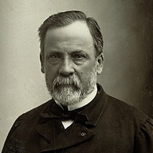

Louis Pasteur
Louis Pasteur, né le 27 décembre 1822 à Dole (Jura) et mort le 28 septembre 1895 à Marnes-la-Coquette (Hauts-de-Seine,
à cette époque en Seine-et-Oise), est un scientifique français, chimiste et physicien de formation. Pionnier de la microbiologie,
il connut, de son vivant même, une grande notoriété pour avoir mis au point un vaccin contre la rage.

Page 1